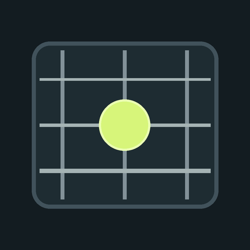

Fret Notes
最新版
ギター・ベースの指板学習、コード・スケール表示、チューナー、単音の演奏練習をひとつにまとめたデスクトップアプリです。
Windows お使いのOS
Windows 10 / 11（64ビット）。インストーラーを実行するとスタートメニューとデスクトップにショートカットを作ります。
Windows版をダウンロード (.exe)macOS お使いのOS
macOS 11 以降（Apple シリコン・Intel 両対応）。.dmg を開き、Fret Notes を「アプリケーション」へドラッグします。
macOS版をダウンロード (.dmg)はじめて起動するとき
このアプリはコード署名をしていないため、初回起動時にOSの警告が出ます。
- Windows：「WindowsによってPCが保護されました」と出たら「詳細情報」→「実行」を押します。Microsoft Edge WebView2 Runtime を使います（Windows 11 には標準で入っています）。
- macOS：「開けません」と出たら一度閉じ、「システム設定」→「プライバシーとセキュリティ」の下にある「このまま開く」を押します。開かない場合はターミナルで
xattr -cr "/Applications/Fret Notes.app"を実行してください。 - チューナーと演奏練習で音声入力を開始すると、マイク（オーディオ入力）の使用許可を求められます。許可してください。
おもな機能
- ギター・4弦/5弦ベース、標準・Drop D/Drop A・半音下げ・独自チューニング
- 位置→音名、音名→位置のクイズと反応時間の記録
- 19種類のコード、21種類のスケール、度数表示とコードシェイプ
- クロマチックチューナー（A4基準 400〜480 Hz）
- 単音の演奏練習、コード進行に合わせたコードトーン練習、リズム・聴音トレーニング
- 学習記録、苦手ポジションの練習
更新とアンインストール
- 新しい版は同じ手順で上書きインストールできます。設定と記録は引き継がれます。
- Windowsは「設定」→「アプリ」から、macOSは「アプリケーション」から削除します。